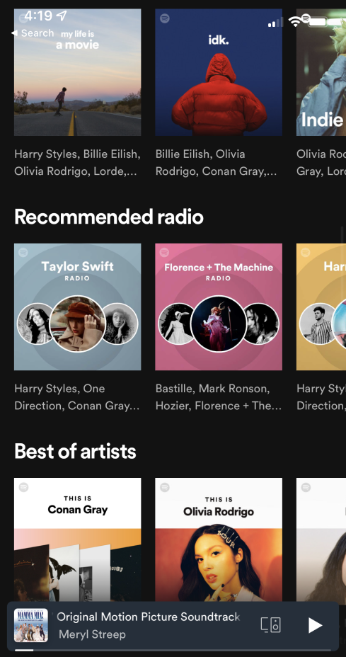
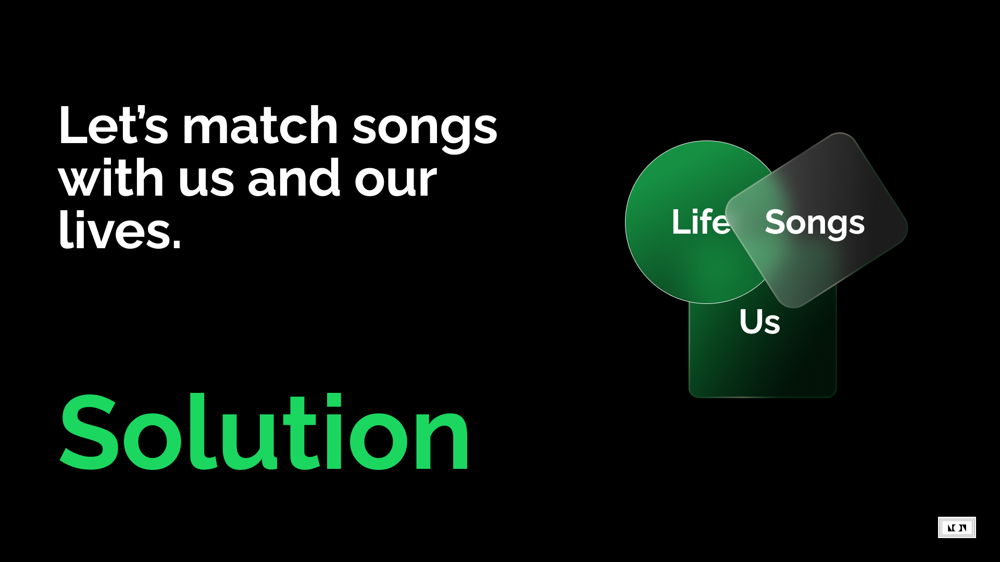
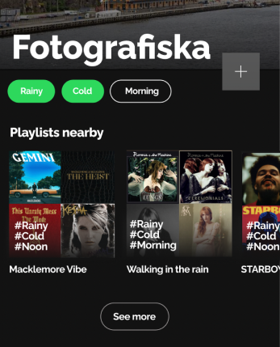
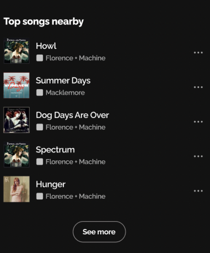
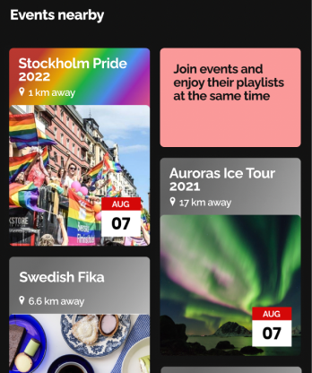
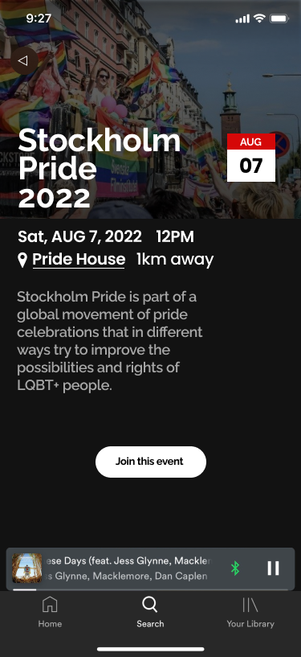
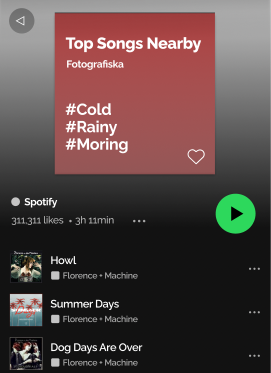
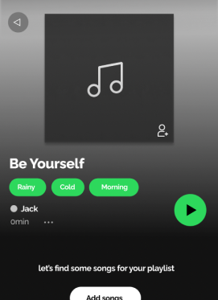

?Problem Statement?
Music is an experience outside our screen. And how we feel about a song is affected by multi-sensory. Which means: where we are and what we are doing will affect our music choice. With AI, Spotify can recommend songs according to user’s music preference.
But there is no location-based browsing to let users to find songs based on places.
Solution
Let's match songs with us and our lives.
Playce
Time
Weather
Location
Key Features
Playlists
Top Songs
Events
 New “Like” button
New "Make Collaborative" button
Next Project